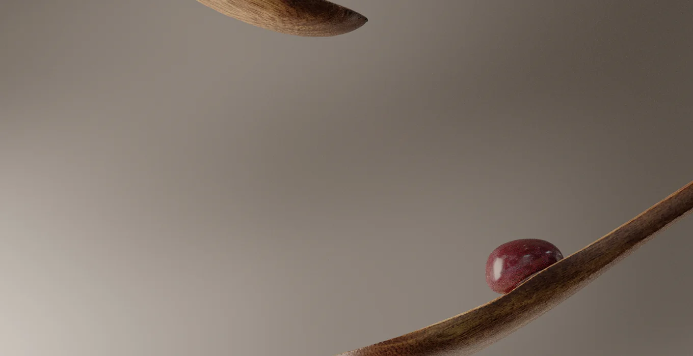

01raisins
Éclairage / Motion
— Voir les détails et la vidéo

01
Éclairage / Motionraisins
Projet personnel
Projet autour de la lumière, des matières et du mouvement. J’ai travaillé l’éclairage animé, les simulations et les mouvements de caméra dans Houdini.
- Rôle
- Éclairage · Simulation · Animation caméra · Montage · Étalonnage
- Outils
- Houdini · Karma XPU · DaVinci Resolve